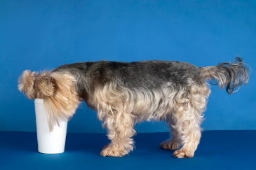
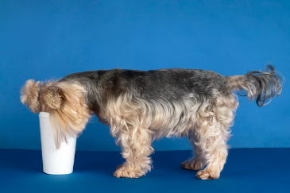

Родиной йоркширского терьера являются графства Йоркшир и Ланкашир в северной Англии. Его возможным предком называют уотерсайдского терьера. Эта порода была популярна в XVIII—XIX веках в Йоркшире и описывалась как Маленькая, серо-голубая собака с полудлинной шерстью». Этих собак держали крестьяне, так как им было запрещено заводить больших собак, чтобы они не браконьерствовали на землях, принадлежавших знати. Небольшие собачки охраняли дома от грызунов и сопровождали своих хозяев в торговых поездках вдоль рек и каналов (отсюда и название). Некоторые специалисты называют в числе предков йорков и мальтийских болонок, хотя они значительно отличаются от них: у мальтезе висячие уши и белый окрас.
Все о вестиках